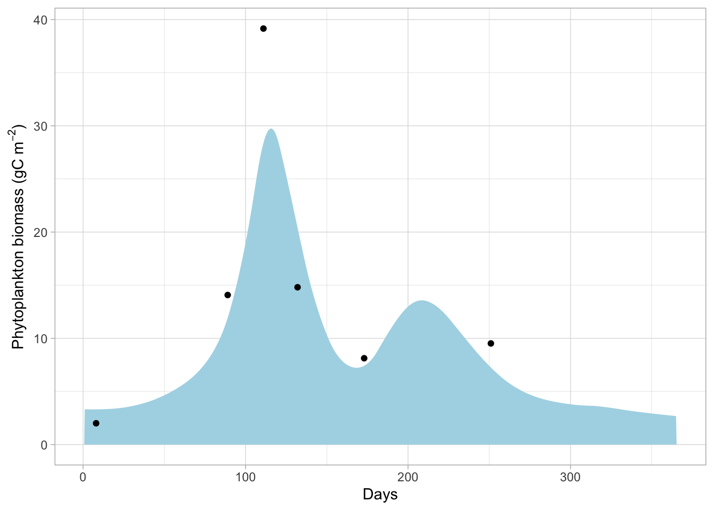
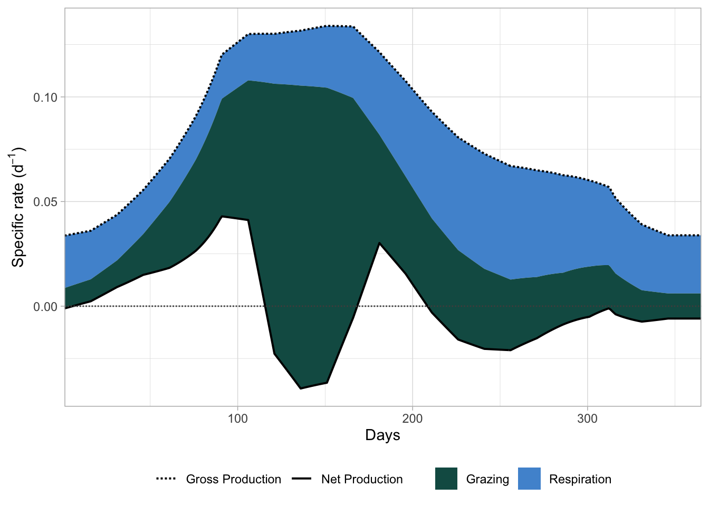

library(here)
library(deSolve)
library(patchwork)
library(mgcv)
library(tidyverse)Riley 1946
Setup
Load packages
Load forcing data
dat_forc <- read.csv(here("data", "forcing.csv")) %>%
mutate(days = days + 1) # data is 0 base (1.1. corresponds to day 0)
dat_obs <- read.csv(here("data", "observed.csv"))First Model
Define parameters
parameters <- list(
p = 2.5, # gC(gC)^-1 d^-1
I_min = 0.0015, # g cal cm^-2 min^-1
r = 0.069, # °C^-1 (Q10=2, Why 0.69 in Excel???)
R_0 = 0.0175, # day^-1
g = 0.0075, # day^-1
# forcing data
forcing = dat_forc
)Define first model version. Use approx() to interpolate forcing data for each time point. For now, use rule = 2 so that for time points outside of the period in forcing data values are returned.
m_riley <- function(time, state, parameters) {
with(as.list(c(state, parameters)), {
# helper function to interpolate frocing data
get_approx <- function(parameter) {
y_val <- approx(
x = dat_forc$days,
y = dat_forc[[parameter]],
xout = time,
rule = 2
)$y
# catch NA values and stop execution
if (is.na(y_val)) {
stop(sprintf(
"Interpolation failed for '%s' at time %s",
parameter,
time
))
}
return(y_val)
}
# interpolate at "time"
dat_forc <- forcing
I_0_t <- max(get_approx("I_0"), I_min * 1.0001) # avoid I_0 < I_min which would lead to division by 0 (z_eup => 0, used in photos equation)
k_t <- max(get_approx("k"), 1e-6) # avoid possibel 0 division in z_euph formula
L_N_t <- get_approx("L_N")
z_mix_t <- get_approx("z_mix")
temp_t <- get_approx("temp")
zoo_bm_t <- get_approx("zoo_bm")
# Euphotic depth
z_euph <- log(I_0_t / I_min) / k_t
# Light limitation
L_V <- if (z_euph < z_mix_t) z_euph / z_mix_t else 1
photos <- (p * I_0_t) /
(k_t * z_euph) *
(1 - exp(-k_t * z_euph)) *
L_N_t *
L_V
resp <- R_0 * exp(r * temp_t)
graz <- g * zoo_bm_t
dPhyto_bm <- (photos - resp - graz) * Phyto_bm
PP_specific <- photos # d^-1
PP_areal <- photos * Phyto_bm # g C m^-2 d^-1
list(
dPhyto_bm,
photos = photos,
resp = resp,
graz = graz
)
})
}Define initial conditions
state <- c(Phyto_bm = 3.377)Time period to be integrated. Use 15 days because starting value is one time step (originally 15 days) before start of model.
Hint: This leads to
approx()using the 1st forcing data point for -15 days. See below for improvement. Use interval of 1 day instead of 15 days.
times <- seq(-15, 365, 1)Run the model
solution <- ode(
y = state,
times = times,
func = m_riley,
parms = parameters
)Results
Plot the integrated data
plot_phytop <- solution %>%
as_tibble() %>%
filter(time > 0) %>%
ggplot(aes(x = time, y = Phyto_bm)) +
geom_area(fill = "lightblue") +
geom_point(data = dat_obs) +
labs(x = "Days", y = expression("Phytoplankton biomass (gC " * m^-2 * ")")) +
theme_light()

Plot the rates
Annoyingly,
ggplot()can’t make stacked area plots like Excel.geom_ribbonwith the explicit values have to be used.

As seen in Figure 2, some predictions are quite “jaggy”. This is probably due to the linear approximations used for the forcing varaibles.
As an alternative, use “cyclic” GAMs. Cyclic means here, that the end of the data is “conncted” to the start.